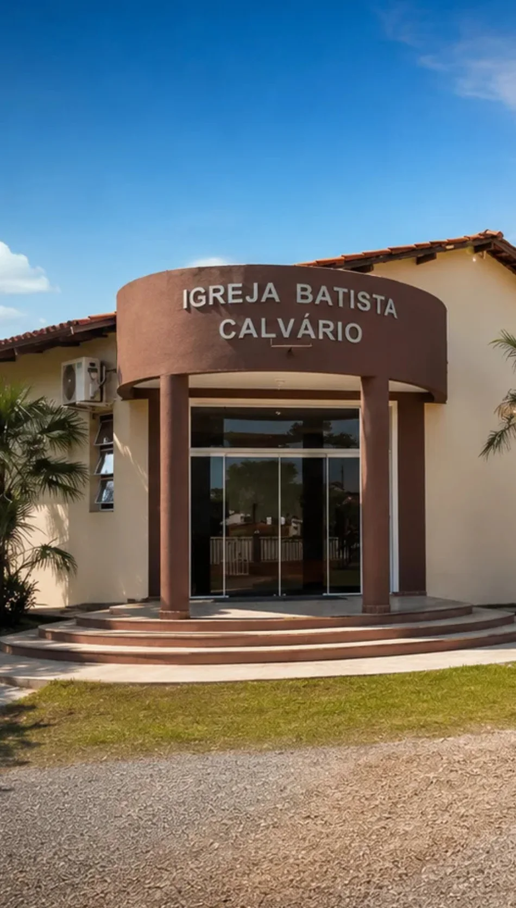

Adoração
Cultos centrados em Cristo, com louvor congregacional, oração e proclamação da Palavra.

Um lugar para conhecer Jesus, crescer na Palavra e viver a fé em comunidade. Há espaço para você e sua família aqui.
Somos uma igreja batista comprometida com o evangelho de Jesus Cristo e com o cuidado de pessoas em todas as fases da vida.
Desde 1987, caminhamos com famílias de Cuiabá por meio da adoração, do ensino bíblico, da comunhão e do serviço. Queremos que cada pessoa encontre um lugar para pertencer, crescer e servir.

A igreja acontece no encontro: com Deus, com a Palavra e uns com os outros.
Cultos centrados em Cristo, com louvor congregacional, oração e proclamação da Palavra.
Aprendizado bíblico acessível e profundo para formar discípulos em todas as idades.
Relacionamentos sinceros, cuidado pastoral e oportunidades para caminhar e servir juntos.
Venha como você está. Será uma alegria receber você em um de nossos encontros.
Ambientes de discipulado, comunhão e serviço pensados para diferentes idades e momentos da vida.
Bíblia, cuidado e alegria em uma linguagem que os pequenos entendem.
Conhecer 02Meninas crescendo em fé, missão e compromisso com Cristo.
Conhecer 03Identidade, propósito e amizades edificantes para jovens mulheres.
Conhecer 04Mulheres fortalecidas na Palavra para servir onde Deus as plantar.
Conhecer 05Formação cristã, missões, recreação e caráter para meninos.
Conhecer 06Louvor, comunhão e conversas bíblicas para a vida real.
Conhecer 07Coragem, responsabilidade e vínculos que fortalecem a caminhada.
Conhecer 08Adoradores que conduzem a igreja em espírito e em verdade.
ConhecerAcompanhe o canal da Igreja Batista Calvário no YouTube e mantenha a Palavra por perto onde você estiver.
Rua Trinta, 7, Quadra 74 · Santa Cruz II, Cuiabá — MT